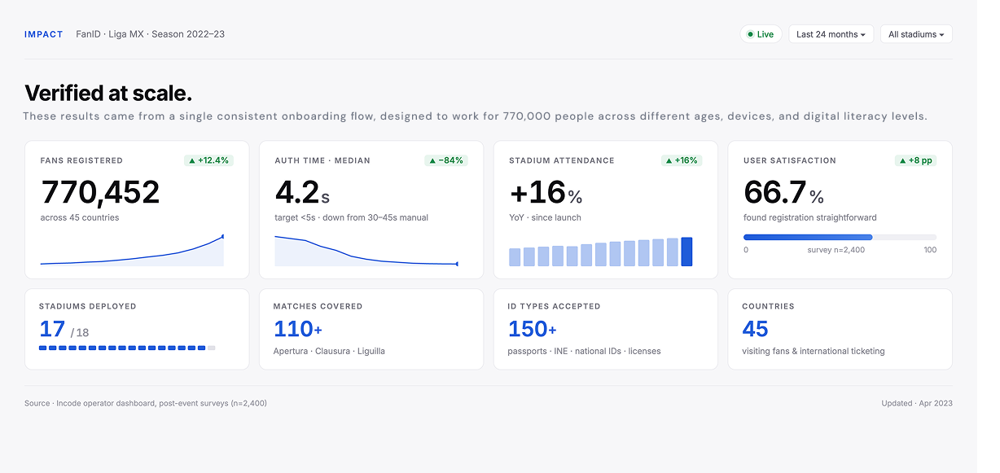
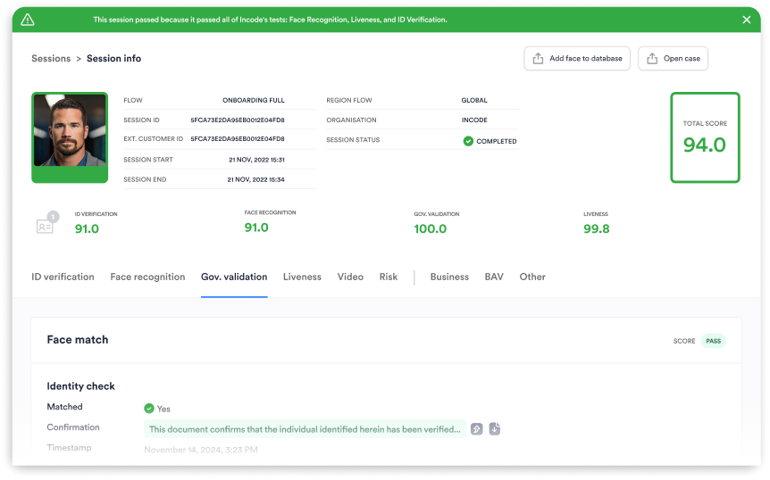

Designing identity verification at national scale — 770,000 fans, 17 stadiums, one consistent flow.

In March 2022, a violent incident at a Liga MX match between Atlas and Querétaro exposed a systemic failure: stadiums had no reliable way of knowing who was entering. Sports authorities responded by mandating identity verification across all national stadiums. Incode was selected to build the solution. I led product design working directly with PM Poojit Sharma.
These results came from a single consistent onboarding flow, designed to work for 770,000 people across different ages, devices, and digital literacy levels — from tech-savvy users to first-time smartphone users.

The challenge wasn't only technical. Tens of thousands of fans had to complete biometric verification before entering — many unaware the requirement existed, with varying levels of digital literacy, under time pressure before kickoff. A slow or confusing flow wasn't just a UX problem: it was a real security bottleneck.
The core principle: move verification pressure away from the entry point. By encouraging pre-event registration, gate congestion dropped significantly. For the verification flow itself, I separated ID capture and face capture into distinct guided steps — reducing cognitive load and error rates at each stage.
The operator dashboard had to support fast decision-making under real event-day pressure. I structured information in a status-first hierarchy — critical verification states immediately visible, evidence organized to support review without hesitation. Exception handling was designed to resolve edge cases without disrupting access control flow.

Beyond single-event access, the identity wallet extended verification into a persistent layer — linking tickets, credentials, and future access points under one verified profile. One registration, any stadium, any match.
I'm currently open to Senior Product Designer opportunities in fintech, B2B SaaS, and digital identity.